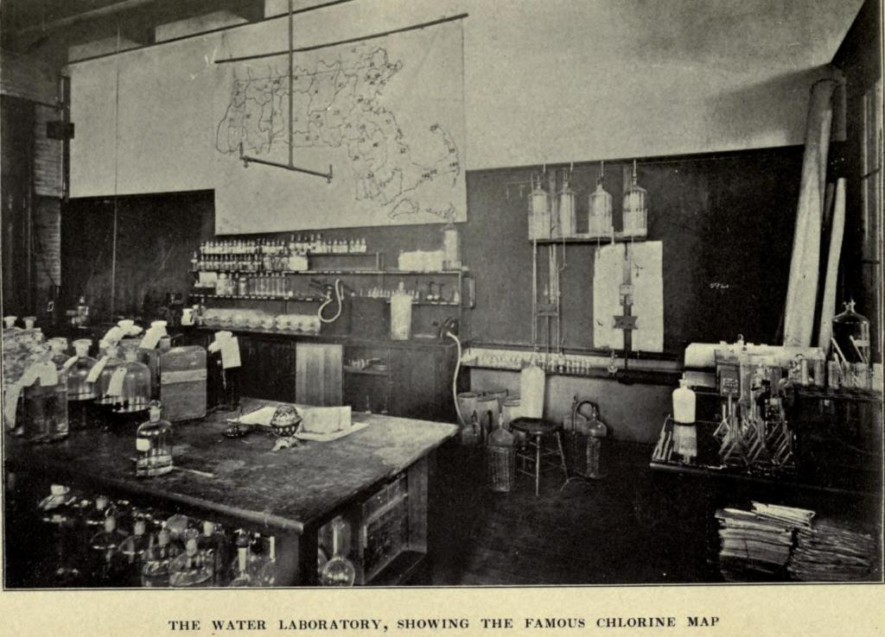

Biography
Ellen Swallow Richards was an industrial engineer and environmental chemist. Ellen's work in pioneering foor sanitary engineering laid a foundation for the new science of economics. Ellen founded the home of economics movement and she was the first woman to apply chemistry to the study of nutrition. She graduated from the Massachusetts Institute of technology in 1873 to then later become it's first female instructor. Ellen was homeschooled in her early years, but when her family moved to Westford in 1859, she attended Westford academy. She studied mathematics, composition, and Latin.
Ellen was the first woman ever in America to be accepted to any school of science and technology. She was also the first American woman to ever get a degree in chemistry. She got this degree from Vassar College in 1870. Ellen was known as a feminist and she believed that women's work in a household was an essential aspect of the economy. On June 4, 1875, Ellen Swallow married Robert H. Richards,a chairman of the Mine Engineering Department at MIT, she had worked with him in the mineralogy laboratory. They lived in Jamaica Plain, Massachusetts. With her husband's support, Ellen remained associated with MIT, volunteering her services and giving $1,000 annually to the "Woman's Laboratory," which was a program in which her students were mostly schoolteachers, whose training had lacked laboratory work, and who wanted to perform chemical experiments learn mineralogy.